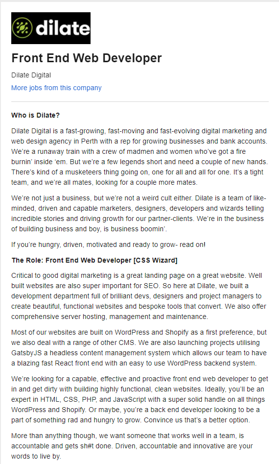
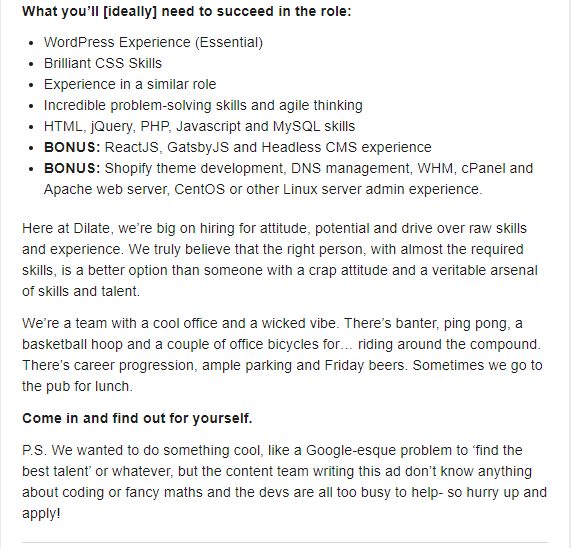

About Nicholas
Nicholas Joiner is currently a student enrolled in Introduction to Information Technology and Introduction to Programming through Open Universities Australia studying at RMIT. Previously worked as an apprentice mechanical aircraft engineer for in mostly the private aviation sector but decided to change career pathways and pursue a career pathway in IT.
Interesting fact about myself
Currently I am living in a historical homestead called ‘Dromkeen’ that was built for Judge Author Wolfe Chomley in 1989, who acted as an assistant prosecutor for Ned Kelly case. Dromkeen Homestead in recent years has mostly been known as the hub for children’s literature within Australia, with Various different Australian Authors Illustrators books and artwork on display. The original Dromkeen collection and sculptures have since been donated to the Victoria State Library. Dromkeen now currently has Author/Illustrator Mark Wilsons new exhibition on display.
What are my Interests in IT?
From an early age, I have always been quite fascinated with different forms of Technology. I have always enjoyed building and maintaining computers, deconstructing and fixing various laptops and mobile phone devices around the house. I also try to keep informed about the various technological news from around the world. I have also been quite fascinated about have different devices seamlessly interact with each other.
Information Technology is particularly quite like Aviation in the aspect that there is quite a lot of problem-solving is involved and that you have troubleshot and understood how a particular system works to find a solution.
Why did you choose to come to RMIT?
I choose to study RMIT to further my interests in IT and as RMIT is one of the leading universities in Australia when it comes to Information Technology. Through RMIT, I hope to expand my knowledge about IT and how it can be applied in a different situations and to advance in my pathway towards a career in IT.
Ideal Job
I thought my ideal job would be someone who designs/implements technology solutions for businesses, like a “Technology Solutions Consultant”, but after doing some research, I think I would rather be a “Front End Web Developer”.
  https://www.seek.com.au/job/50427327?type=standout#searchRequestToken=2e0c24cd-820e-44d9-8d63-68265a660194Dilate Digital is a Digital Marketing Agency, which focuses on implementing digital business marketing strategies to enable clients to target their audience effectively. They effectively work on four fundamental principles discover, build, launch and grow. They are looking for someone to implement and build highly function and clean websites that are fundamentally SEO(Search Engine Optimised), this allows the business to show as the top result for specific keywords. I hope that through RMIT I will learn all the skills required for a job like this.
Personal Profile
I have included 3 personality profile tests from 3 different sources
- Myers-Briggs
- learning style test
- Big 5 personalty test
What do the results of these tests mean for you?
After completing these three tests, I noticed that some of the results contradict themselves. When comparing the Myer-Briggs 16 personalities test compared to the Big 5 test, the agreeableness/cooperation results seem to contradict each other. Although there is some information that I can relate to the Myer-Briggs 16 personality test, for instance, I do particularly like to create a secure and stable environment for myself. I do see myself as a cooperative, practical and grounded as a person, but do like to think realistically. I tend to visualise how a specific outcome may finish, and what could go wrong so that I can avoid it. It also might mean I might try to avoid learning something new or be open to new experiences or exploring new environments.